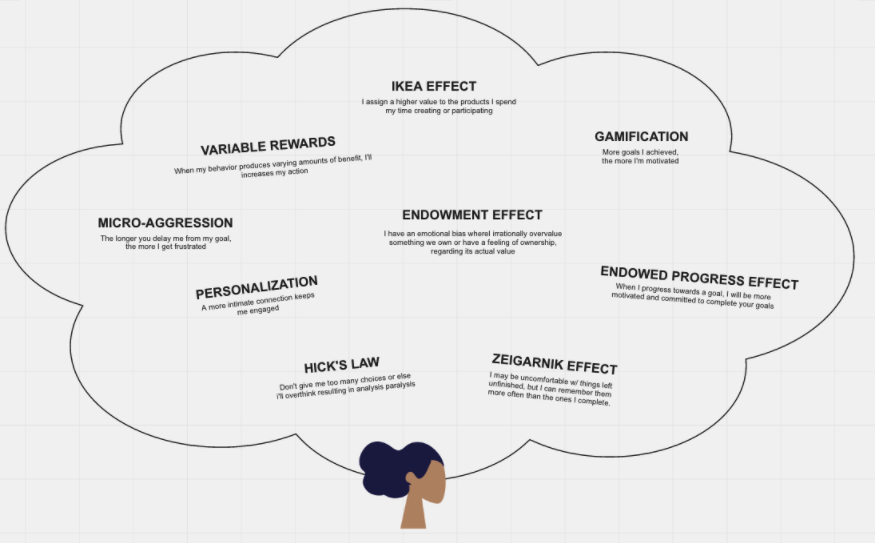

171s
Case study
AdventHealth App Onboarding
The AdventHealth app promised convenient access to appointments, providers, and health data — but at 171 seconds to reach the home screen, the onboarding experience was front-loading effort before users could feel that promise. This evaluation approached the problem not as a registration issue but as a value-delivery problem, using comparative app audits, heuristic review, and behavioral design principles to find where the experience was losing people.
tl;dr
- Effective onboarding needed either to stay close to a 60-second window or deliver immediate value that justified taking longer.
- AdventHealth required 171 seconds to reach the home screen, and the path to record connection could take much longer once MRN friction appeared.
- Competitive comparison showed that some apps asked for less, while others asked for more but clearly delivered on their promise right away.
- Healthcare products can ask for meaningful trust, but they still have to justify that effort quickly once sign-up begins.
- Behavioral design suggested clearer opportunities around progress, personalization, investment, and reward rather than simply adding more explanation screens.
What We Learned
Onboarding Needed to Bridge Intent to Value More Quickly
New users arrive at onboarding with a clear expectation: that the app will help them accomplish something meaningful. The experience has to carry them from that initial intent to their first moment of product value before doubt, distraction, or fatigue takes over.
In this evaluation, onboarding was framed as the bridge across that gap. If the flow failed to clarify what users would get, why setup mattered, or what would become easier afterward, the app risked feeling like administrative work instead of useful support.
That’s why first impressions and perceived speed mattered so much. The issue was not simply how many screens appeared. It was whether each step reinforced the app’s promise.

Category usage context
Healthcare had a relevance advantage, but the app still had to justify the effort it asked up front
Retention over 90 days
Frequency of use per week
Healthcare Had a Relevance Advantage, but the Product Still Had to Earn Access
Compared with many consumer categories, healthcare apps begin with a structural advantage: people often return because the underlying need is real and ongoing. That gives them more initial patience than many entertainment or purely discretionary products.
But that advantage is not automatic. If onboarding obscures core tasks, creates confusion, or delays access to the product’s most important utilities, users can still disengage before they ever reach the thing they came for.
In other words, category need can buy a little patience, but it does not remove the obligation to make setup feel worthwhile. The app still had to prove that the effort to get in would be repaid quickly.
AdventHealth Asked for Commitment Early but Delayed the Payoff
Benchmarking other apps made the friction easier to see. AdventHealth took 171 seconds to reach the home screen without skipping, longer than some competing flows and far beyond the ideal onboarding window cited in the source research.
More importantly, the flow still stopped short of one of the app’s biggest promises: connecting a user to their records through a medical record number. That meant the most meaningful value was still downstream from an already long setup path.
Comparative onboarding time
AdventHealth asked for more time up front than several adjacent healthcare experiences
The data-points table made the tradeoff even sharper. Some products asked for very little before showing value. Others asked for a lot, but had a clearer payoff structure. AdventHealth risked sitting in the uncomfortable middle: meaningful effort up front without enough immediate reward.
Benchmark matrix
The setup burden was not just time, it was how much each product asked before value appeared
| Product | Minimum info required | Other info collected | Screens | Time |
|---|---|---|---|---|
| Amwell |
|
|
2 | 105 sec |
| AH (new customers) |
|
|
4 | 171 sec (sans MRN) |
| Experian |
|
|
0 | 190 sec |
| Amazon |
|
|
0 | 30 sec |
| GoodRX |
|
|
3 | 84 sec |
| Teladoc |
|
|
12 | 420 sec |
| ZocDoc |
|
|
0 | 30 sec |
Behavioral Design Offered Better Ways to Reduce Entry Friction than More Explanation
The most useful next step was not simply to rewrite onboarding copy. The stronger opportunity was to redesign the experience around motivation and momentum: variable rewards, user investment, personalization, progress cues, and reduced cognitive load.
Seen this way, onboarding becomes less like a form sequence and more like the beginning of a relationship. Each step should help the user feel that they are getting somewhere, learning something relevant, or building something that will matter to them later.

The security-versus-simplicity tension remained real, but this evaluation made it easier to discuss where that balance could shift. Not every step had to feel lighter, but the user had to understand why the effort was worth it and feel progress while they were making it.
Outcome of the Work
This work turned a broad onboarding concern into a clearer access strategy. It gave the team a way to talk about time-to-value, feature discovery, and setup burden rather than only form completion.
It also defined a practical next-step roadmap: understand where users first discover the app, track how they move through onboarding, study feature usage after account creation, and redesign the flow around a smaller set of meaningful value moments.
Implications
- Reduce the gap between account setup and the first meaningful proof of product value.
- Design onboarding as a motivational sequence, not just a registration checklist.
- Track discovery source, setup drop-off, and first-use behavior so future improvements are grounded in behavior rather than assumption.
In that sense, the outcome was a clearer direction. The evaluation identified where the product was over-asking before sign-in, where it was under-rewarding once users arrived, and where behavioral design could make the path into the app feel more intentional and more worth completing.
Continue Exploring
Contact
Want to talk through the onboarding evaluation?
The 171-second benchmark, the behavioral-design framing, or how time-to-value plays out differently in healthcare than in other categories — happy to get into any of it.